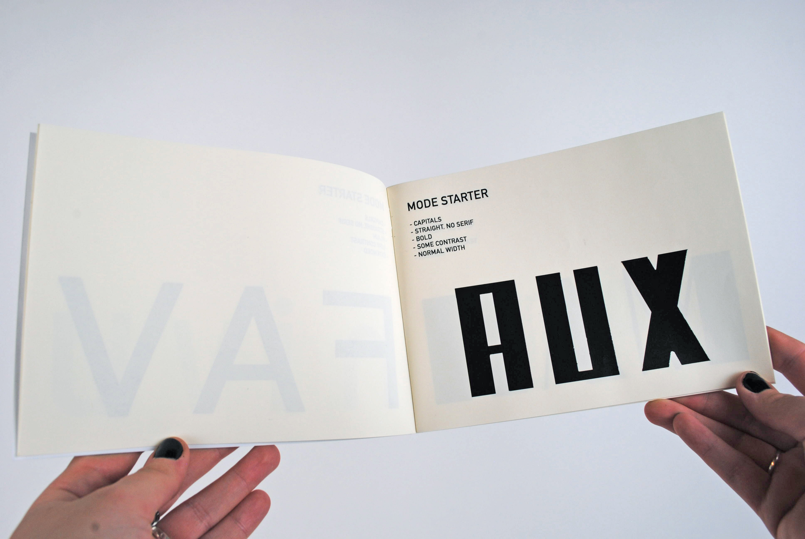

CONTRAINTES TYPOGRAPHIQUES TYPECOOKER
Conception de 20 lettrages à la main en tenant compte des contraintes du site TypeCooker, telles que le type de contraste, la présence ou non d'empattement, la construction de la lettre, l'épaisseur, la largeur et la quantité de contraste. Le processus a inclus la génération de 20 demandes, suivies de la création de mots de 3 à 6 lettres en accord avec les contraintes obtenues, avec deux niveaux différents. J'ai regroupé mes lettrages dans une édition et composé une affiche de 600x800 mm.